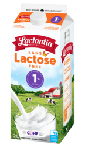
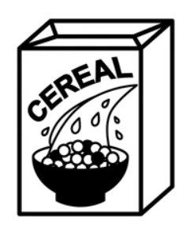

Ingredients
| Ingredient | Quantity |
|---|---|
| Milk | Cereal |
| 200-300 ml | Depends |
|  |  |
How to?
Pour milk into a bowl, it should sound smth like this.
Then you can put it into the microwave to get the desired temperature, without making the cereal soft. Then you add the cereals. Done.